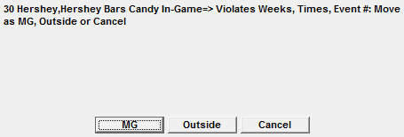
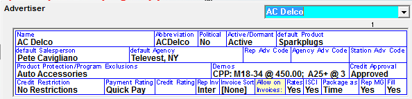

Sports Vehicle Spots
When contracts are scheduled, inventory is taken and spots are created in the Spot Screen. Each spot booked into each break is listed on a separate avail line, which shows the spot length and advertiser/product.
Spot Key Definitions
Color, italics, underline, strike through and symbols are used to indicate information about the spots. These options are defined in the Key icon located in the upper left corner of the screen.
Rules about Spot Distribution and Spot Moves
- The spots ordered per week will be distributed between Events within the selected week to equal the number of spots per week ordered
- Meaning, If 4 spots are ordered per week, and there are two events scheduled for that week, the system will try to place 2 spots in each game
- If a spot is moved from one event into another event within a week, the system will automatically update the spot distribution on the order to reflect the spot move
- Meaning, if there were two events scheduled within a week, and each event had two spots ordered, and one spot was moved from Event 1 to Event 2, the contract will still reflect 1 spot in the Event 1 and 2 spots in Event 2
- If spots are ordered by week, and the Event’s date is changed on the Event Schedule, the spots will remain in the week ordered and will be rescheduled
- The contract will be updated to reflect that change
- The only exception, is when there is only one event scheduled in the week. In that case, the spots will move with the event, but will be placed in missed
- If spots are ordered by event and the event’s date is changed, the spots will move with the event
- The contract will be updated to reflect the date change
Scheduling Rules
- Event spots try to schedule wherever the Event is scheduled
- Spots moved from one Event to another can be moved as Outsides or Makegoods
- If an Event’s library avails are increased, any missed spots will try to schedule into the new avails
- Conventional vehicles are automatically locked if you are using the Pre-empt feature and you have booked your sport event with a firm date and time. If the sports event times are changed, the conventional vehicle’s locked avails are adjusted
Spot Screen Overview
To move and fill your events, select your vehicle from the Dropdown in the upper left hand corner. Select your event from the event dropdown, and select the default season to view in the upper left hand corner. You will see the event number, event date, and the event’s abbreviation. The main section of the screen lists seven Events across, with each event’s filled and unsold avails below. Events in the past appear in red, and future events appear in blue. Any canceled events will appear with a yellow background and an X over them. (Should a canceled event’s status be changed, the X will disappear and the yellow background will return to white.)
Missed Area
The Missed Information Area on the lower right hand corner shows the missed spots for the vehicle/week selected. Spots may be missed due to competitive or advertiser separation, program exclusions, oversold, etc.
Whether you are able to only see those spots missed in the current vehicle you are trafficking, or missed spots from other sports and non-sports vehicles as well, depend upon how the spot move questions in Vehicles -> Options -> Sports are answered:
The system defaults to showing you only those spots missed in the vehicle you are currently viewing. If you would like to see all missed spots for the week (or desired time period), click the Missed Area field and switch the view from Current to All.
Based on the three questions in Vehicles -> Options -> Sports, you will see all applicable missed spots. You can view all of the spots on separate lines or by contract lines, by clicking on the dark blue toggle to the left.
You can change the missed information shown by clicking on the dropdown in the Missed Area in the Header. The view options are:
- Current Events: shows the missed spots for the Events displayed
- Current Month: shows the missed spots for the current month
- Past Month: shows the missed spots for previous month
- Advertiser: shows the missed spots for a selected advertiser
- Direct Response: Lists any contracts designated as Direct Response in the order screen
- Per Inquiry: Lists any contracts designated as Per Inquiry in the order screen
- PSA: Lists any contracts designated as PSA in the order screen
- Promo: Lists any contracts designated as Promo in the order screen
- Canceled: displays canceled spots
- Hidden: displays hidden spots
Types of Spot Moves
In the Vehicles -> Options -> Sports tab, there are three choices regarding sport spot moves. These choices work independently of one another, and can be answered uniquely for each sports vehicle in your system.
- Allow Sport Spots to be Moved to Non-Sports Vehicles: Allows you to move or fill a spot ordered on a sports vehicle onto a non-sports vehicle
- Allow Sport Spots to be Moved to other Sports Vehicles: Allows you to move or fill a spot ordered on one sports vehicle onto another sports vehicle
- Allow Spots from Non-Sports Vehicles to be Moved to Sport Vehicle: Allows a spot ordered on non-sports vehicles to be moved or filled onto the sports vehicle
Moving Spots
The spot screen assumes you want to ‘Move’ spots instead of ‘Fill” (bonus) with spots, so the spot mode defaults to Move mode as shown by the radio button in the top center of the screen.
Moving a Spot by Dragging and Dropping
To move a spot within the event or from the missed area to an avail, click and hold the mouse over the spot in until it says drag. Drag and drop the spot on the desired avail.
Swapping a Spot’s Position
To switch spot positions, drag one spot on top of another spot and Swap will appear. Release the spot and the two spots will switch positions.
Moving a Spot by Mouse Clicking
To move a spot without dragging, double mouse click the spot. The spot will become highlighted and a green line will appear across the top with the spot’s information. Once highlighted, double mouse click on an open avail, or on another spot to swap positions.
Moving spots across Events and Vehicles
Depending on how the Vehicle -> Options -> Sports questions are answered, sports spots may or may not be moved from one sports vehicle to another, and/or between sports vehicles and non-sports vehicles. When you move a spot across vehicles, you will be asked whether to move the spot as a Make Good or an Outside. Makegoods draw attention to the spot move on the Invoice, whereas Outsides do not.

Fill Spots
Fill is a way to bonus spots directly from the Spot screen, without needing to alter the contract. Fill spots can be created in mass by using the Fill Button, or individually created on the spot screen itself.
There is a question in the Lists -> Advertisers screen which asks whether to show Fill spots on invoices.

You can also opt to show or exclude Fill spots on invoices in the Fill screen.
Manually Fill on Spot Screen
To manually create a Fill spot, switch the Spot Mode from Move to Fill using the radio button at the top center of the screen.
Double click one the advertiser you want to Fill (bonus). You will see a green “Fill” box with the spot information that will be created.
Double click the unsold avail where you want the fill spot, and the Fill spot will be created with a + to its left.
Fill Button
The Fill button is used to fill unsold avails in mass.
Select what events you wish to fill from on the left hand side of the screen and which Events you wish to Fill on the right hand side of the screen. You can choose to fill from all events by selecting “All Events”, or you can select events individually.
Contracts associated with the selected events will appear in the box below. You can also choose what type of contracts to include by selecting, $ Spots (contracts with dollars), N/C (contracts that have no dollars attached), PSAs, Promos, Remnants, PIs (Per Inquiry), DRs (Direct Response).
Fill Scheduling Rules
Fill spots are created using the ordered dates, days, times, events, and vehicles defined for a schedule line. Indicate the ‘rules’ the Fill spots will follow by checking the appropriate boxes.
- Show on Inv (Invoice):
- As Advt (Advertiser) Set will follow how the advertiser is set up to handle Fill spots in the List>Advertisers screen
- Yes will create spots with a status of “Bonus” on the Spot Reports and the Invoice
- No will create spots with a status of “Extra”
- Honor Avail Name: If checked on, Fill spots will only be created within the Named avail they were booked into, if unchecked, they will be created and scheduled into any named avail, i.e., a spot ordered into Pre-Game could be scheduled into a post-game avail
- Advt/Competitives:
- Vehicle Rule – will default to the scheduling rules defined in the Vehicle Option Table
- Not Same Break – will not schedule spots in the same break
- None – will not use any scheduling rules, spots of the same advertiser may be scheduled in the same break.
- Ignore Empty Avails: This is used if you only want to fill completely open breaks and do not want to fill partially sold break sets
- Use Line Days/Times: If checked on, fill spots will follow whatever rules/parameters were set up in the contract. If unchecked, then fill spots can be created for days and times not ordered
- Skip Locked Avails: If you have locked avails, no fill spots will be created in those avails when this option is selected
- Allow 10” spots into 15” Avails: If you have a combination of 10 and 15 second spot lengths and you need to create the 10’s for the 15’s, select this option
Once everything is selected, click Fill and answer the pop up question, and your avails will be filled.
Actions
The action button is used to access several Spot tools that make it possible to perform actions on multiple spots at the same time.
- Pre-empt: Removes all spots for an advertiser or product code (i.e. Beverages) and prevents spots from being scheduled into the open avails by locking them. This is frequently used when a conventional vehicle is being pre-empted to broadcast a sporting event
- Reschedule: Schedules missed spots for the selected vehicle(s), advertiser(s), date(s), and times using the ordered info and normal scheduling rules
- Spot Cancel: Changes scheduled or missed spots to be canceled with a canceled reason that will show on the invoice (if these spots show). You can also change canceled spots to be missed and reschedule them
- Erase Fill: Removes all fill spots for specified vehicle(s), advertiser(s), date, and time
- Lock: Locks avails so no spots can schedule into or out of any break
- Unlock: Unlocks previously locked avails, allowing spots to be scheduled
- Front Load: Due to the nature of Sports vehicles and Event Schedules, Front Load does not work with Sports vehicles
For more information on the Action screens, click here.